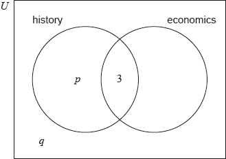

In a group of 20 girls, 13 take history and 8 take economics. Three girls take both history and economics, as shown in the following Venn diagram. The values and represent numbers of girls.

Find the value of ;
Find the value of .
A girl is selected at random. Find the probability that she takes economics but not history.